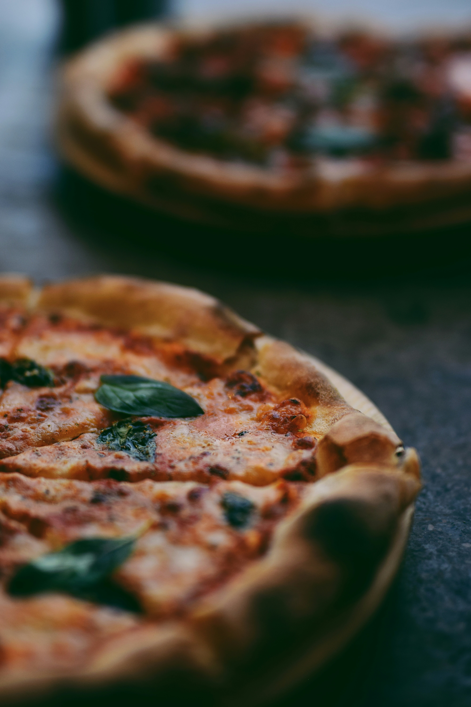

Home
Pizza

Description
This homemade pizza is crispy on the outside, soft on the inside, and packed with flavor.
It is made with simple ingredients like tomato sauce, mozzarella cheese, and your favorite toppings.
The recipe is easy to follow and perfect for beginners who want to make a classic pizza at home.
Serve it hot and enjoy it with friends or family.
Ingredients
- 1 pizza dough
- 1/2 cup tomato sauce
- 1 cup shredded mozzarella cheese
- Your favorite toppings (e.g., pepperoni, mushrooms, bell peppers)
- 1 tablespoon olive oil
- Salt and pepper to taste
Instructions
- Preheat the oven to 245°C.
- Roll out the pizza dough on a floured surface.
- Transfer the dough to a pizza stone or baking sheet.
- Spread the tomato sauce evenly over the dough.
- Top with mozzarella cheese and your favorite toppings.
- Bake for 12-15 minutes, or until the crust is golden brown and the cheese is bubbly.
- Let it cool for a few minutes before slicing and serving.